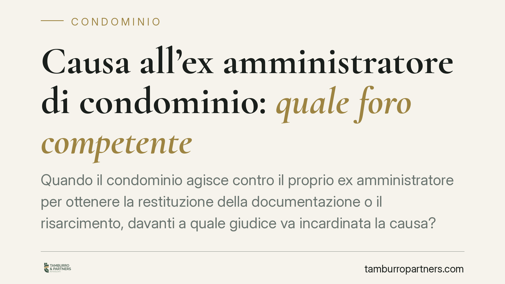

Causa all'ex amministratore di condominio: quale foro competente
Quando il condominio agisce contro il proprio ex amministratore per ottenere la restituzione della documentazione o il risarcimento, davanti a quale giudice va incardinata la causa? La questione non è formale: sbagliare foro significa veder dichiarare l'incompetenza e dover ricominciare. Un orientamento della Cassazione chiarisce che non opera il foro speciale condominiale, ma i criteri ordinari del codice di rito.

Il caso
Al termine dell'incarico, l'amministratore uscente deve consegnare al subentrante tutta la documentazione condominiale: registri, rendiconti, contabilità, contratti. Quando ciò non avviene, oppure quando emergono ammanchi o gestioni irregolari, il condominio promuove una causa per ottenere la riconsegna dei documenti o il risarcimento del danno.
Si pone allora un problema preliminare di competenza territoriale: davanti al tribunale di quale luogo va proposta la domanda? La risposta dipende dalla natura giuridica del rapporto tra condominio ed ex amministratore.
Inquadramento normativo
Il rapporto tra condominio e amministratore si qualifica come mandato (artt. 1703 e seguenti del codice civile). L'amministratore gestisce beni e interessi altrui per conto del condominio e, al termine dell'incarico, è tenuto al rendiconto e alla restituzione di quanto ricevuto in ragione del mandato, secondo l'obbligo sancito dall'art. 1713 c.c.
Questa qualificazione è decisiva. L'art. 23 del codice di procedura civile detta un foro speciale per le cause tra soci e tra condòmini: riguarda, cioè, le liti che sorgono tra i partecipanti alla compagine, in ragione del loro rapporto associativo o della contitolarità delle parti comuni. Non istituisce un foro generale "del condominio" verso qualsiasi controparte.
L'ex amministratore, però, non è un condòmino nella sua qualità di gestore: è controparte di un rapporto contrattuale di mandato, ormai cessato. La lite non è una controversia endocondominiale tra partecipanti, ma un'ordinaria azione contrattuale. Per questo l'art. 23 c.p.c. resta strutturalmente fuori gioco: manca il presupposto soggettivo che ne giustifica l'applicazione.
Un orientamento della Corte di Cassazione ha ribadito proprio questo principio: le azioni di restituzione dei documenti o di risarcimento contro l'ex amministratore hanno natura contrattuale e seguono i criteri ordinari di competenza. (Il numero e l'anno dell'eventuale ordinanza di riferimento vanno verificati sulle banche dati ufficiali prima di qualunque citazione puntuale.)
Perché conta: quali fori si applicano
Esclusa l'operatività del foro speciale, la competenza si individua combinando i criteri ordinari del codice di rito.
Il foro generale è quello della residenza o del domicilio del convenuto, cioè dell'ex amministratore (artt. 18 e 19 c.p.c.). È il criterio di base.
A questo si affianca, in via alternativa e a scelta dell'attore, il foro facoltativo delle obbligazioni previsto dall'art. 20 c.p.c., che consente di agire anche nel luogo in cui l'obbligazione è sorta o deve essere eseguita.
Il punto delicato è individuare il luogo di esecuzione quando si chiede la restituzione dei documenti. L'obbligo di riconsegna discende dall'art. 1713 c.c. e va eseguito là dove la documentazione deve essere materialmente consegnata al nuovo amministratore. In concreto, il luogo coincide di norma con la sede dell'amministrazione condominiale o con il luogo in cui la consegna era prevista negli accordi o nel verbale di passaggio. Dove manchi un'indicazione specifica, si guarda al luogo in cui la prestazione, per sua natura, doveva svolgersi.
La distinzione ha un risvolto pratico immediato: il condominio può spesso scegliere tra agire presso il tribunale del domicilio dell'ex amministratore e quello del luogo di esecuzione dell'obbligo, orientando la causa verso il foro più agevole.
Cosa fare in concreto
- Formalizzate il passaggio di consegne con un verbale sottoscritto da amministratore uscente e subentrante, che elenchi la documentazione trasmessa e quella mancante: è la prova dell'inadempimento e aiuta a individuare il luogo di consegna.
- Inviate una diffida all'ex amministratore, a mezzo PEC o raccomandata, intimando la restituzione dei documenti entro un termine preciso e indicando il luogo di consegna.
- Acquisite una delibera assembleare che autorizzi il nuovo amministratore ad agire in giudizio: la legittimazione processuale va documentata.
- Verificate residenza e domicilio attuali dell'ex amministratore, per impostare correttamente il foro generale ex artt. 18-19 c.p.c.
- Valutate il foro delle obbligazioni ex art. 20 c.p.c., ricostruendo con esattezza il luogo in cui la riconsegna doveva avvenire, così da scegliere consapevolmente la sede giudiziaria.
Individuare correttamente il giudice competente evita eccezioni di incompetenza che allungano i tempi e aumentano i costi del contenzioso.
Ogni condominio ha una storia a sé.
Se gestisci un'amministrazione e vuoi un confronto su una specifica questione condominiale, scrivi allo studio. Ti rispondiamo entro un giorno lavorativo.